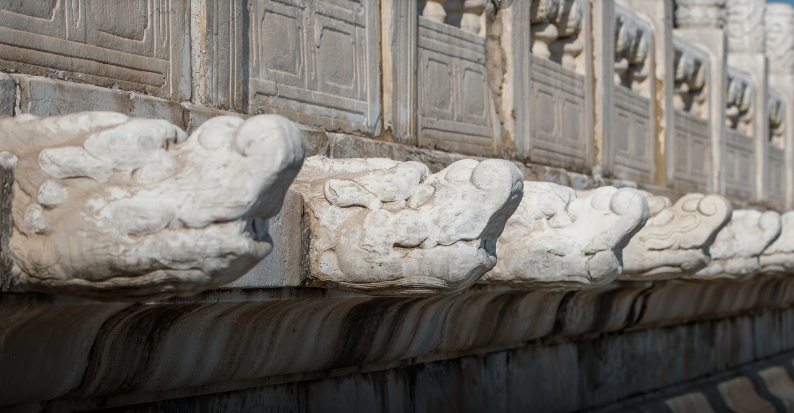
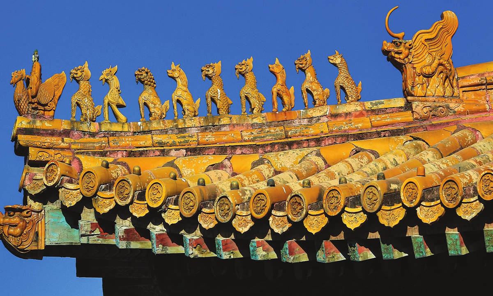

World's Largest Surviving Palace
The Beijing Palace Museum, also known as the Forbidden City, is a royal palace of China's Ming and Qing dynasties and is located in the center of Beijing's central axis. The Palace Museum is centered on three halls - Hall of Supreme Harmony, Hall of Central Harmony, and, Hall of Preserving Harmony - and has more than 70 other large and small power supply buildings with over 9,000 rooms. The total area is about 720,000 square meters and the building area is about 150,000 square meters.
Explore online!
Three must-see highlights
The throne
The decoration of the Hall of Supreme Harmony is very luxurious. The hall of gold tiles pavement, the bright room with a throne, the throne on both sides of the arrangement of six 1.00m diameter leaching powder paste gold dragon pattern of the giant pillar, and the paste gold foil using dark and light colors so that the pattern stands out distinctly. Lastly, there are more than 10,000 dragons decorating the building of Hall and its interior and the pedestal of the three main halls.
Over 1000 chi dragons 
The legend is that the chi dragon is a divine creature that loves to play with water, so it is placed on top of the three-story pedestal of the Hall of Supereme Harmony to remove water from the hall area. When heavy rains come to Beijing, more than 1,000 chi dragons can present a spectacular sight of a thousand dragons spitting water.
Rooftop Beasts 
These adornments, known as “ridge beasts (脊兽)” or “house-ridge beasts (屋脊兽),” were deliberately placed on the roof-ridges of the palace halls, as auspicious totems for the former imperial court. According to traditional feng shui concepts, placing mythical animals on rooftops will help dispel evil spirits. The ornate row of ten animals plated gold placed atop the Hall of Supreme Harmony, and elsewhere in the Forbidden City, was meant for exorcising evil spirits and to display the wealth and power of the imperial family.
Common Beasts
- Dragon
- Rooster-riding deity
- Lion
- Sea Horse
Auspicious animals such as these are not only found in palaces; temples, businesses, and everyday items make use of their images. At mausoleums (especially the imperial tombs of Ming and Qing dynasties) these animals protect bodies from interference by evil spirits, and hopefully frighten off tomb-raiders. At these locations across China, tourists today can see how the mythical beasts still keep watch over their realms.